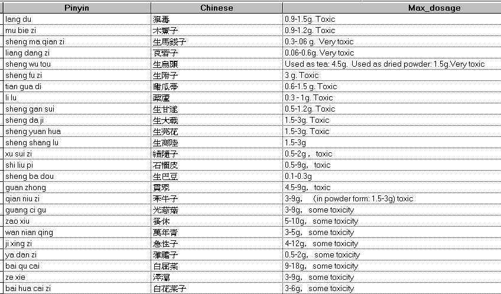

Herb toxicity

Edited by and translated: Joe Hing Kwok Chu
This article is for professional use only. If you are not in medical field, you should consult your medical provider.
The following is a warning on toxicity of certain herbs. The maximum dosages listed are just opinion of the editor. It should not be interpreted as the absolute amount. The weight is in metric measurement of grams. Some patients are more sensitive to certain herbs and some have more tolerance for some other herbs. They are listed here for your reference in your professional practice .
Traditionally, in China, the acceptable practice is that the herb doctors prescribe the formulae and the patients keep the copies and buy the herb at the herb stores of their choice. This practice prevents conflict of interest and it shows that you, the practitioner, can stand up for your prescription. If patients keep copies of the prescribed formulae, it is easier to keep track of the herbs being used.
To see the Latin botanical names go to the herb dictionary and use the Chinese name dictionary and select the the letter of the herb in pinyin to open the herb dictionary. Some herbs might not be in the dictionary. If you cannot find it, you can email the editor.

|
Acupuncture |
||||
|
Massage / Acupressure |
Hypnosis |
Drug Dictionary |
BioChem Dictionary |
|